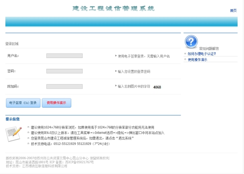
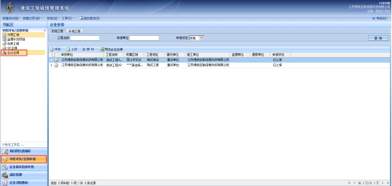
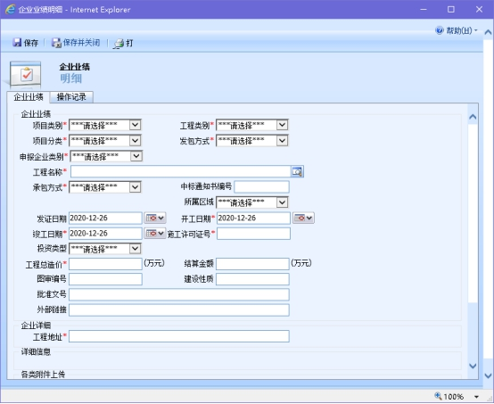
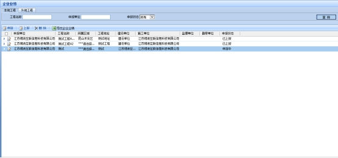
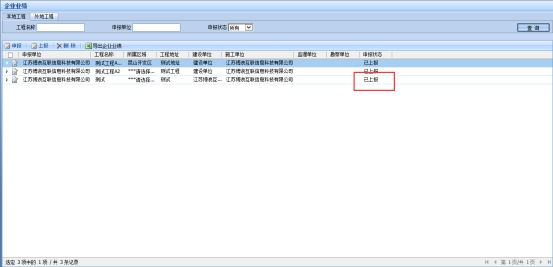
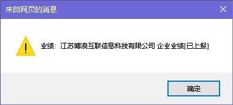
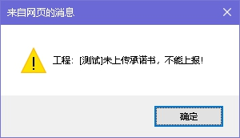

【信息发布时间：2021-01-08阅读次数：】 【我要打印】 【关闭】
各投标企业：
为深化“放管服”改革，推行我市公共资源交易“不见面”服务，进一步方便投标企业办事，减轻企业投标成本，结合我市企业投标业绩管理实际，决定自2021年1月20日起，取消建设工程业绩原件核对。
投标企业按拟投项目招标文件要求，通过“昆山市建设工程诚信管理系统”进行业绩数据录入。业绩数据一经录入，不得进行修改，但在投标截止时间前可以对资料进行必要的补充，所补充的资料不得对原有资料进行实质性的改变。
投标企业所提交的业绩数据将按招标文件规定作为投标文件的组成提供给招标人，并在中标候选人公示时公示。投标企业应对所提交的业绩信息的完整性、清晰性、合法性负责，在录入业绩数据的同时须通过系统提交《昆山市建设工程业绩真实性承诺书》（见附件1）。
自2021年1月20日后开标（资格审查）的项目，若投标企业在1月20日前已选取了业绩，投标企业必须按照上述要求进行业绩修改，并在工程项目投标系统中撤销投标后重新选择相关业绩进行项目投标。1月20日后选取业绩必须按照要求进行业绩修改后方可选取。具体操作参照《昆山市建设工程诚信管理系统企业业绩操作指南》（见附件2）。
各单位在使用诚信管理系统中如有问题，请及时与我中心联系，联系电话：0512-36833606。技术支持联系电话：0512-55121920。
附件1：昆山市建设工程业绩真实性承诺书
附件2：昆山市建设工程诚信管理系统企业业绩操作指南
昆山市建设工程招标投标管理办公室
苏州市公共资源交易中心昆山分中心
2021年1月8日
附件1:
昆山市建设工程业绩真实性承诺书
为维护市场公平竞争，营造诚实守信的市场环境，我单位自愿通过《昆山市建设工程诚信管理系统》填报我单位的业绩情况，用于参与昆山组织的工程招标投标活动，同时对提交的建设工程业绩，作如下承诺：
1.我单位提交昆山市建设工程诚信管理系统的“企业业绩”均经我单位确认无误，按照招标文件的要求，提供给招标人并作为中标候选人响应招标文件要求的资格能力条件部分的内容公示；
2.我单位承诺填报的工程真实存在，并由我公司依法施工完成。我公司承诺如有虚假，自愿暂停3个月进入苏州市公共资源交易中心昆山分中心参加投标，愿意被记入不良信用记录，接受相关处罚，并承担由此带来的一切法律后果。
承诺企业名称（加盖公章） ：
法定代表人（签字或盖章） ：
年 月 日
附件2：
昆山市建设工程诚信管理系统企业业绩
操作指南
1. 打开建设工程诚信管理系统后，企业用户点击【电子签章（CA）登录】后进入系统；（网址：http://cx.ksggzy.com/Navigation/FrmLogin.aspx）

2. 进入系统后，点击左侧菜单栏中的【评优评先/业绩申报】打开菜单，点击【企业业绩】打开企业业绩页面；

3. 若需要进行上报，则在相应的【本地工程】/【外地工程】标签页下点击【申报】按钮打开申报窗口；

4. 完成相关信息的选择/填写并在附件材料中上传承诺书后，点击窗口左上角【保存】按钮生成一条申报状态为【申报中】的工程数据；

若需修改，可双击该条工程数据进行修改（已上传的资料无法作废）；
5. 完成申报后，选择该工程数据，点击【上报】按钮进行上报，该条工程数据申报状态修改为【已上报】；


若在申报时未上传承诺书，则不能进行上报；

已上报的信息不再在公共资源交易中心网站公示，上报的信息可直接在投标活动中进行使用。